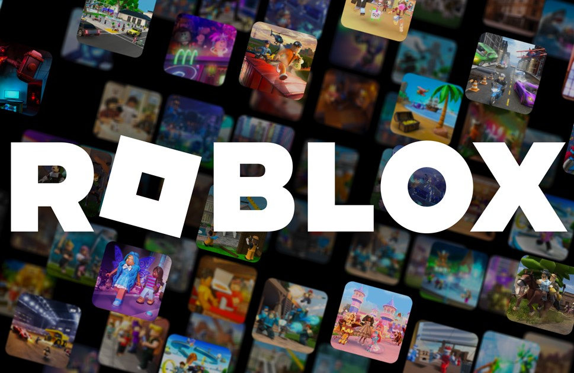

COMIDA
CHURRASCO

El churrasco es un corte de carne, generalmente de res, típico de países como Brasil y Argentina. Se cocina a la parrilla o asado y se caracteriza por su jugosidad y sabor ahumado. Es común servirlo acompañado de chimichurri y guarniciones como papas o ensaladas.
COSTILLAS BBQ
Las costillas BBQ son un plato clásico de la gastronomía estadounidense, especialmente en la cocina sureña. Se preparan a la parrilla o ahumadas, marinadas en salsa barbacoa, lo que les da un sabor dulce, ahumado y ligeramente picante.
BANDEJA PAISA

La bandeja paisa es un plato típico de la región de Antioquia en Colombia. Se caracteriza por su abundancia e incluye frijoles, arroz, carne molida, chicharrón, plátano maduro, huevo frito, arepa, aguacate y morcilla, entre otros ingredientes.
BEBIDAS
HEINEKEN
Heineken es una marca de cerveza lager de origen holandés, reconocida mundialmente por su sabor suave y equilibrado. Se elabora utilizando una receta clásica con malta de cebada, agua, lúpulo y levadura, lo que le otorga un característico amargor moderado.
MICHELADA
La michelada es una bebida mexicana que mezcla cerveza con jugo de limón, salsa picante, salsas como la inglesa o Maggi, y sal. Es una opción refrescante y picante, ideal para disfrutar en climas cálidos, especialmente acompañada de comida.
COCACOLA

CocaCola es una bebida carbonatada de cola creada en 1886 en Estados Unidos. Es una de las marcas más icónicas y consumidas a nivel global, conocida por su sabor dulce y refrescante, además de su fuerte presencia en la cultura popular.
PELÍCULAS
EL SEÑOR DE LOS ANILLOS: LA COMUNIDAD DEL ANILLO
La primera película sigue a Frodo Bolsón, un hobbit que recibe el encargo de destruir el Anillo Único,
una poderosa reliquia que Sauron, el Señor Oscuro, desea recuperar para dominar la Tierra Media.
Frodo se une a la Comunidad del Anillo, formada por humanos, elfos, enanos y hobbits, para proteger el anillo y llevarlo al
Monte del Destino.
EL SEÑOR DE LOS ANILLOS: LAS DOS TORRES
En esta segunda entrega, la Comunidad del Anillo se ha disuelto, y Frodo y Sam continúan su peligroso viaje hacia Mordor.
Mientras tanto, Aragorn, Legolas y Gimli buscan rescatar a Merry y Pippin, y el Reino de Rohan se prepara para la gran guerra contra las fuerzas de Saruman.
Las alianzas se ponen a prueba mientras el destino de la Tierra Media pende de un hilo.
EL SEÑOR DE LOS ANILLOS: EL RETORNO DEL REY
La última película culmina con la épica batalla por la Tierra Media. Mientras Frodo y Sam, guiados por Gollum, se acercan al Monte del Destino
para destruir el Anillo Único, Aragorn reclama su lugar como rey y lidera las fuerzas de los hombres en una última lucha desesperada contra Sauron.
El destino de todos depende de la destrucción del anillo.
SERIES
BREAKING BAD

Breaking Bad es una serie que sigue a Walter White, un profesor de química convertido en fabricante de
metanfetaminas, mientras desciende al mundo del crimen para asegurar el futuro de su familia.
THE MANDALORIAN
The Mandalorian es una serie de Star Wars que narra las aventuras de un cazarrecompensas solitario mientras
protege a un misterioso niño de la misma especie que Yoda, en un viaje lleno de acción y descubrimientos.
DEATH NOTE

Death Note es un anime en el que Light Yagami encuentra un cuaderno con el poder de matar a cualquiera cuyo
nombre sea escrito en él, lo que lo lleva a un intenso juego de inteligencia contra un brillante detective llamado L.
VIDEOJUEGOS
VALORANT

Valorant es un juego de disparos en primera persona desarrollado por Riot Games. Es un título táctico 5
contra 5, donde los jugadores asumen el papel de "agentes", cada uno con habilidades únicas que complementan las armas.
El objetivo principal es atacar o defender sitios estratégicos, colocando o desactivando una bomba (conocida como "Spike").
Con una mezcla de precisión, estrategia y trabajo en equipo, Valorant ha ganado popularidad por su enfoque competitivo y
su estilo de juego rápido.
LEAGUE OF LEGENDS

League of Legends (LoL) es un juego de estrategia y acción multijugador en línea, también de Riot Games.
Es un MOBA (Multiplayer Online Battle Arena) en el que equipos de cinco jugadores controlan "campeones" con habilidades únicas
para destruir el nexo del equipo contrario. Cada partida ofrece un desafío diferente, y el trabajo en equipo es crucial para
controlar el mapa, derrotar a los enemigos y tomar objetivos clave. Es uno de los juegos más populares a nivel mundial
y cuenta con una gran comunidad de esports.
ROBLOX

Roblox es una plataforma de videojuegos en línea donde los jugadores pueden crear y compartir sus propios
juegos y mundos virtuales. Es popular entre usuarios de todas las edades debido a la gran variedad de experiencias
interactivas que ofrece, desde simuladores y juegos de aventuras hasta mundos de rol. Roblox fomenta la creatividad al
permitir a los jugadores programar y diseñar sus propios juegos utilizando el motor de Roblox Studio, lo que ha dado lugar a
una enorme biblioteca de juegos creados por la comunidad.
LUGARES
LA GUAJIRA: CABO DE LA VELA Y PUNTA GALLINAS

Cabo de la Vela y Punta Gallinas, ubicados en la península de La Guajira, son lugares espectaculares donde
el desierto se encuentra con el mar Caribe. Cabo de la Vela es conocido por sus hermosas playas y paisajes áridos, ideales
para el kitesurfing y el ecoturismo. Punta Gallinas, el punto más septentrional de Sudamérica, ofrece paisajes impresionantes
con dunas de arena que caen al mar y playas vírgenes, siendo un destino perfecto para aventureros.
VILLA DE LEYVA
Villa de Leyva es un pueblo colonial en Boyacá, famoso por su arquitectura bien preservada y su enorme plaza principal
empedrada. Fundado en 1572, este destino ofrece un viaje al pasado con sus calles adoquinadas, casas blancas con techos de teja y diversos
atractivos históricos. Es ideal para quienes buscan disfrutar de la tranquilidad, la historia y la cultura en medio de las montañas andinas.
PARQUE NACIONAL NATURAL EL COCUY

El Parque Nacional Natural El Cocuy, ubicado en la Cordillera Oriental de los Andes, es uno de los destinos más
impresionantes de Colombia para los amantes del montañismo y el senderismo. Con una vasta cadena de picos nevados, como el
Ritacuba Blanco, y lagunas de aguas cristalinas, el parque ofrece rutas de trekking por paisajes de alta montaña, páramos y glaciares,
además de ser hogar de una rica biodiversidad.